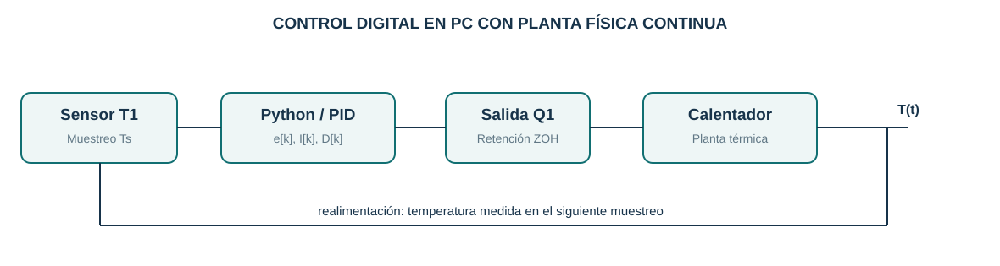

Discretizar, sintonizar y comparar reguladores. Teoría, ecuaciones explicadas, ejercicios guiados y experimentación con Python/TCLab.
2 sesiones · 120 min cada unaTCLab · PythonEvidencia experimental
1. Objetivos y organización
Clase 1 · 120 min
PID continuo y digital
Acciones P/I/D, derivación de ecuaciones en diferencias, muestreo, saturación, anti-windup y filtrado de derivada.
Clase 2 · 120 min
Sintonización y comparación
Diseño IMC/λ usando Kp, τ, θ medidos; control P, PI y PID con simulación y posterior TCLab físico.
Logro: justificar cada coeficiente del controlador en unidades de ingeniería y medir su desempeño.
Al finalizar: justificar las tres acciones del PID; deducir PI/PID digital por diferencias; filtrar la derivada; tratar saturaciones y transferencias de modo; comparar IMC, Ziegler–Nichols y Cohen–Coon, utilizando ensayos homogéneos.
2. Fundamentos del PID continuo y significado físico de sus parámetros
El controlador proporcional transforma directamente el error instantáneo en acción; el integrador incorpora la historia acumulada del error y permite corregir desviaciones permanentes; el derivador responde a la velocidad de variación de la medida. Para TCLab, la variable manipulada Q1 se expresa en porcentaje de potencia y la variable controlada T1 en °C.
PID continuo con derivada sobre medida para evitar derivative kick
En la forma paralela se utilizan KP=Kc, KI=Kc/Ti y KD=KcTd. En forma dependiente, los tiempos Ti y Td siempre deben acompañarse de sus unidades. «Más integración» significa menor Ti, no mayor.
PID ideal en Laplace: válido para derivada sobre el error sin filtrado
La fórmula anterior es una representación ideal para analizar características dinámicas. En la implementación real la derivada se aplica a la medida y está filtrada, de manera que la estructura exacta no puede condensarse sin más en ese mismo Gc(s) para cambios de referencia. Debemos distinguir regulación ante perturbaciones de seguimiento de consignas.
2.1 Cómo afectan P, I y D la respuesta de TCLab
Acción
Ventaja principal
Limitación práctica
P
Respuesta directa y sencilla
Puede dejar error estacionario y amplificar oscilaciones si Kc es grande
I
Compensa errores persistentes
Puede provocar sobreimpulso y windup durante saturación
D filtrada
Puede mejorar amortiguamiento ante cambios medidos
Sensible a ruido y al periodo de muestreo; no siempre mejora sistemas térmicos lentos

Camino físico y digital: sensor T1, lectura periódica, PID en Python, retención de Q1 y planta térmica TCLab.
2.2 Cuándo elegir PI frente a PID
En plantas térmicas de primer orden con ruido de medición y retardo, PI suele ser un punto de partida adecuado: elimina el error sostenido sin aumentar tanto la sensibilidad al ruido. El PID completo se justificará solamente si una prueba comparativa a las mismas condiciones muestra mejoras en métricas reproducibles.
3. Deducción del algoritmo digital y tratamiento de saturaciones
3.1 De la integral a la ecuación en diferencias
El controlador digital se ejecuta en tk=kTs. Si se utiliza la regla rectangular hacia atrás, el integrador acumulado entre dos instantes se actualiza con el error del instante actual:
Área rectangular del error en un periodo
Regla de actualización integral utilizada en el firmware Python
Por ejemplo, Kc=1.5 %/°C, Ti=30 s, Ts=2 s, e=5 °C e Iprev=4 % producen un incremento de 0.5 %, por lo que I=4.5 %. Ts no es un parámetro arbitrario de interfaz: el valor usado en el cálculo debe corresponder al intervalo real del controlador, no solamente al valor escrito en el cuadro.
3.2 Derivación sobre medida y filtrado discreto
La diferencia hacia atrás aproxima la derivada de T1, con signo negativo para oponerse al aumento de la temperatura. En la práctica utilizamos una filtración exponencial con Tf para disminuir el efecto del ruido:
Diferencia hacia atrás y coeficiente del filtro
Filtro de primer orden en la derivada
Contribución D con signo opuesto a la pendiente de T1
Cuando Td=0, el controlador es PI y no se necesita el término derivativo. Si Tf se hace excesivamente grande, el derivador pierde efecto; si se hace muy pequeño, se transmiten fluctuaciones rápidas.
3.3 Forma posicional, límites y anti-windup
Comando antes de restricciones físicas
Saturación con umin=0 % y umax=100 %
La protección de anti-windup por integración condicional verifica si el candidato integral produce un mando saturado: si uraw>100 y e>0, no acumular; si uraw<0 y e<0, tampoco. En los demás casos, integrar normalmente. El criterio evita acumular errores que empujan el mando más allá de sus límites.
Integrador propuesto, antes del criterio anti-windup
Otra técnica —que no implementaremos inicialmente— es la retrocálculo o back-calculation, que agrega a la integral un término proporcional a u−uraw para deshacer la saturación. Debe especificarse su tiempo de seguimiento Tt y mantenerse la consistencia de unidades.
Estructura alternativa de back-calculation; no usar simultáneamente con el bloqueo condicional
3.4 Transferencia manual ↔ automática y lógica de seguridad
Al pasar de manual a automático, un controlador sin inicialización puede producir un salto brusco. Para una transferencia aproximadamente sin salto, el integrador inicial puede elegirse para que el mando inicial del regulador iguale el mando manual que estaba aplicándose:
Inicialización de I para transición sin salto, si los límites lo permiten
El control se calcula solo si la lectura T1 es válida. En un fallo de comunicación, error de sensor o paro, el programa debe dejar las dos salidas en 0 % mediante el mecanismo de seguridad disponible; además, el operador debe poder desconectar la alimentación eléctrica. No confiar exclusivamente en una excepción de software como elemento de seguridad.
4. Sintonización fundada en la identificación FOPDT
4.1 Sintonización IMC simplificada de PI
Partimos de la planta identificada Gp(s)=Kpe−θs/(τs+1). Para una elección sencilla de sintonización IMC tipo PI, la constante λ [s] expresa la rapidez deseada del lazo cerrado. Una λ mayor suele producir control más conservador.
Regla IMC PI simplificada; ganancias en %/°C y Ti en s
Esta regla es una aproximación de diseño para modelo de primer orden con retardo, no una garantía universal de desempeño. Verifique signo de ganancia, unidades, límite de potencia y error del modelo antes de aplicarla al TCLab.
4.2 Ziegler–Nichols y Cohen–Coon: uso crítico
Para comparar criterios se presentan dos fórmulas clásicas de PI por curva de reacción (no la variante de oscilación última). Cuando θ es pequeño, el cociente τ/θ hace que ambos métodos generen ganancias muy altas. Por ello estos parámetros se estudian primero en simulación y no deben descargarse automáticamente en el equipo físico.
Ziegler–Nichols: PI basado en curva de reacción
Cohen–Coon: ganancia PI basada en curva de reacción
Cohen–Coon: tiempo integral PI
4.3 Ejemplo numérico completo
Para Kp=0.55 °C/%, τ=125 s, θ=6 s, elegimos λ=125 s. Calculamos las tres sintonías y comparamos:
PI IMC: punto de partida conservador
PI Ziegler–Nichols: potencialmente agresivo
PI Cohen–Coon: potencialmente agresivo
Los parámetros representan un modelo didáctico simulado, no el TCLab de un alumno. La misma sintonía no puede transferirse sin ensayo desde un modelo obtenido en una mesa hacia otra placa.
4.4 Cómo comparar justamente dos controladores
Utilice idéntica referencia, temperatura inicial, periodo de muestreo, límite de potencia, duración, modelo y perturbación Q2. Registre no solo la trayectoria T1, sino también el mando Q1. Un PID que sigue rápido pero mantiene Q1 saturado o oscila fuertemente puede ser peor que un PI más lento.
IAE [°C·s], ISE [°C²·s]
La comparación requiere repetir el ensayo o reportar incertidumbre. El filtro D puede mejorar el amortiguamiento en determinados casos, pero puede empeorar el resultado si domina el ruido o si el muestreo es irregular.
5. Laboratorio virtual de reguladores
IAE (°C·s)—
Potencia integrada (%·s)—
Temperatura final (°C)—
Ensayo simulado: referencia de 40 °C en 30 s y perturbación Q2 = 40 % en 390 s. Las curvas son generadas por el modelo docente.
Práctica 6
Introduzca los parámetros identificados en la Semana 14 en la simulación y obtenga Kc y Ti iniciales con IMC.
Pruebe P, PI y PID con la misma referencia y tiempo de simulación; mantenga iguales las condiciones iniciales.
Compare IAE, oscilación, saturación, esfuerzo de control y recuperación ante perturbación Q2.
Solo después de validar límites en simulación, conecte TCLab físico y utilice valores de referencia conservadores con supervisión.
Apague ambos calentadores, guarde CSV y elabore gráficas con unidades.
La aplicación permite control ONOFF, P, PI y PID. Los resultados de un controlador no pueden juzgarse únicamente por la última temperatura: examine también el mando y las alarmas.
6. Problemas y comprobaciones para estudio autónomo
Problema 15.1 · Actualización digital paso a paso
Para r=40 °C, y=35 °C, Kc=1.5 %/°C, Ti=30 s, Ts=2 s, Iprev=4 %, bias=15 % y Td=0, estime el próximo mando PI.
PI digital sin saturación
Repita el cálculo con Ts=5 s y explique cómo cambia la integración en un intervalo más largo.
Problema 15.2 · Derivada filtrada
Si y[k−1]=34.0 °C, y[k]=34.4 °C, Ts=2 s, Tf=8 s, zprev=0 y KcTd=12 %·s/°C:
Filtrado de la diferencia
Acción D resta potencia cuando T1 aumenta
La contribución filtrada es menor que la diferencia sin filtro, que daría −2.4 %. Discuta cuál sería más vulnerable al ruido.
Problemas propuestos
Derive la actualización de I[k] desde la integral continua y documente el supuesto de muestreo uniforme.
Para Ts=1 s, Tf=4 s y una diferencia de 0.3 °C entre muestras, calcule el filtro derivativo tras dos actualizaciones.
Con Kc=2 %/°C, e=20 °C, Iprev=65 % y ub=0, establezca si debe bloquearse la integral al aplicar saturación superior.
Calcule IMC, ZN y CC para Kp=.7 °C/%, τ=160 s, θ=12 s, λ=180 s. Compare Ti y ganancias con unidades.
Diseñe una transición manual a PI sin salto para u_manual=35 %, e=4 °C, Kc=1.2 %/°C, ub=0 y D=0.
Con igual intervalo y control, discuta qué métrica penaliza más los errores grandes: IAE o ISE.
Explique cómo determinaría el Ts real en una implementación donde el USB muestra jitter de 0.2 s.
Proponga tres condiciones experimentales que justificarían mantener PI en vez de PID para TCLab.
7. Materiales y recursos
Guía académica de la Semana 15
Documento de estudio y procedimiento experimental con objetivos, ecuaciones, problemas resueltos y actividades propuestas.
El control digital con TCLab estándar se ejecuta en Python por USB. La validación experimental y la compatibilidad real del equipo deben comprobarse presencialmente.
8. Evaluación formativa y tutor de IA
Responda las preguntas y después justifique cada selección con ecuaciones o evidencias experimentales.
1. ¿Qué parámetro describe la rapidez fundamental de una planta térmica de primer orden?
2. ¿Cuál es el efecto más directo del término integral?
3. ¿Qué representa el archivo CSV creado en modo simulación?
Tutor de IA · preguntas orientadoras
Actúe como tutor socrático de Ingeniería de Control para la Unidad III del curso INTERFAZ-IA, Semana 15. Ayúdeme a explicar la teoría matemática antes de contestar ejercicios; compruebe unidades y signos; exija justificar las ecuaciones, los modelos, el muestreo, el anti-windup y los resultados del TCLab. Pregunte una cosa por vez, sin inventar datos experimentales ni entregar directamente el resultado final.